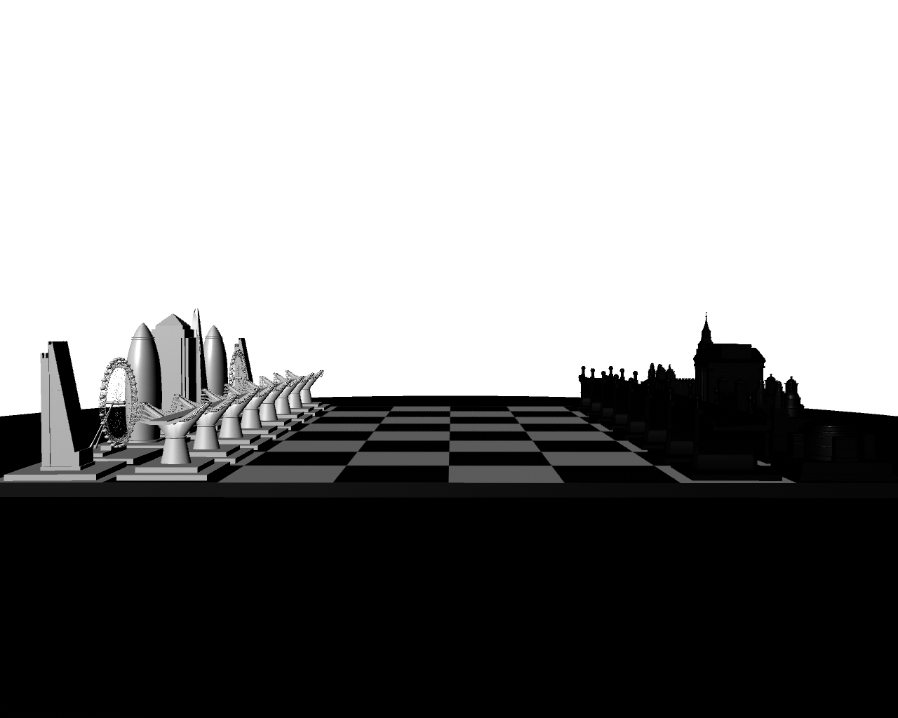
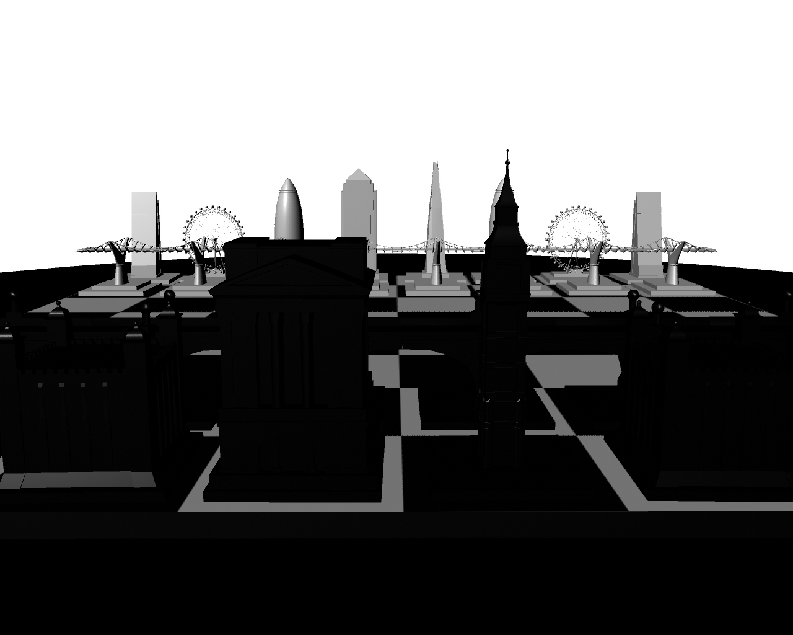
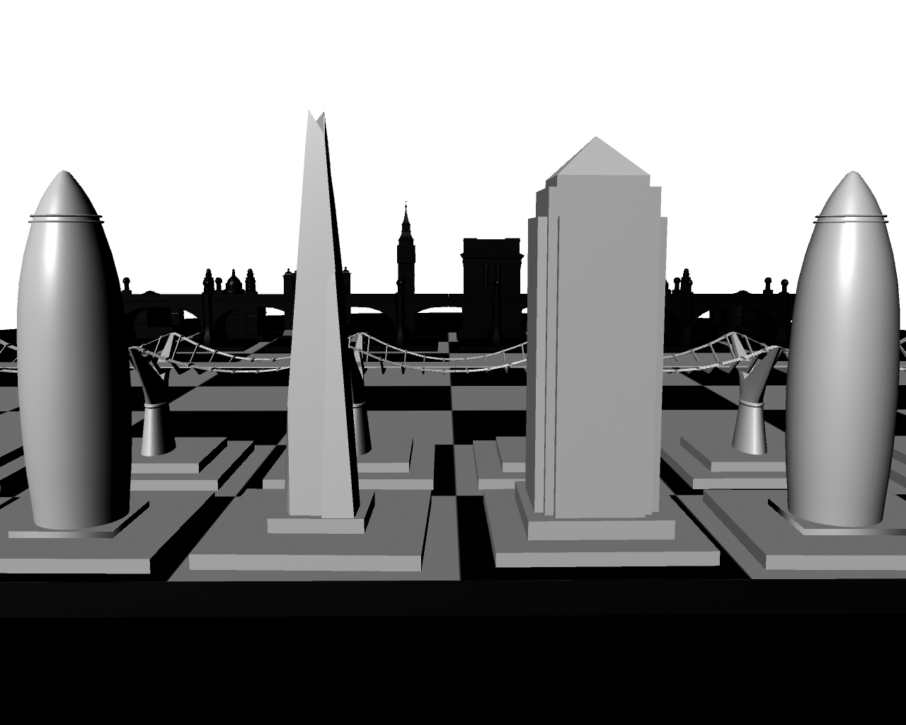
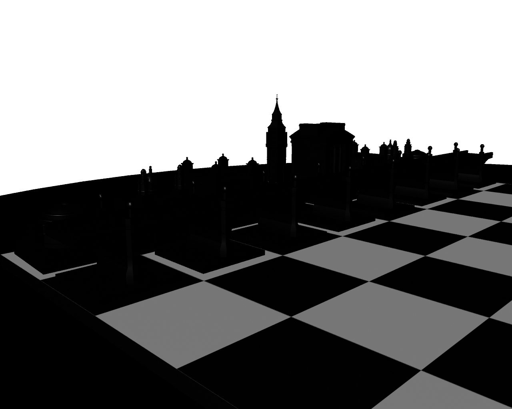
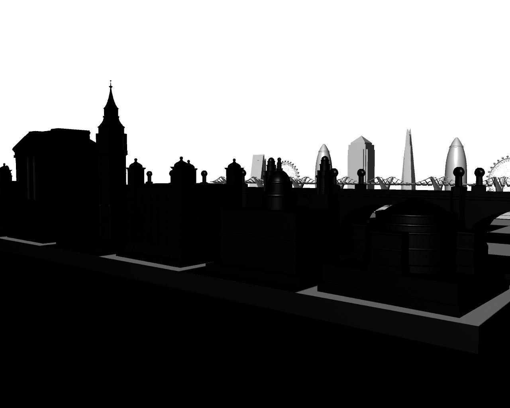
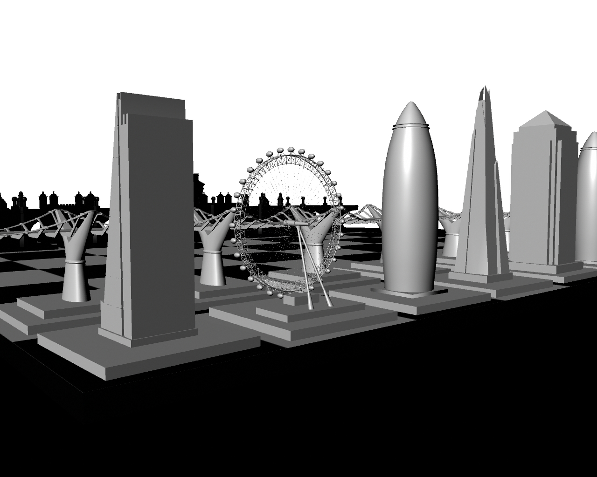
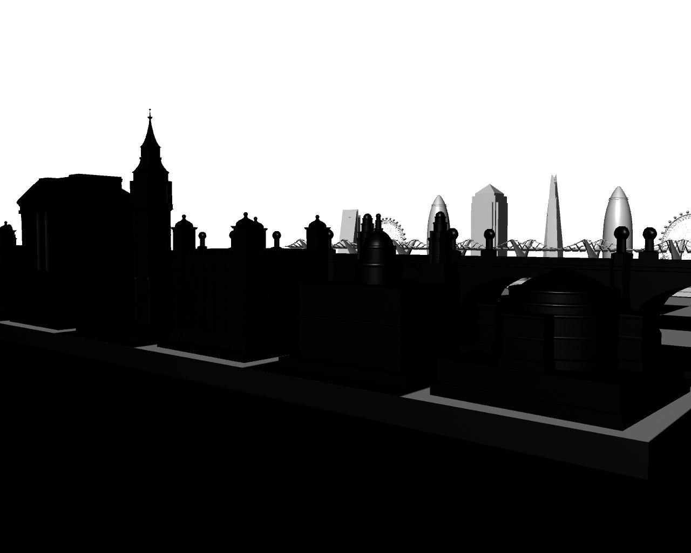
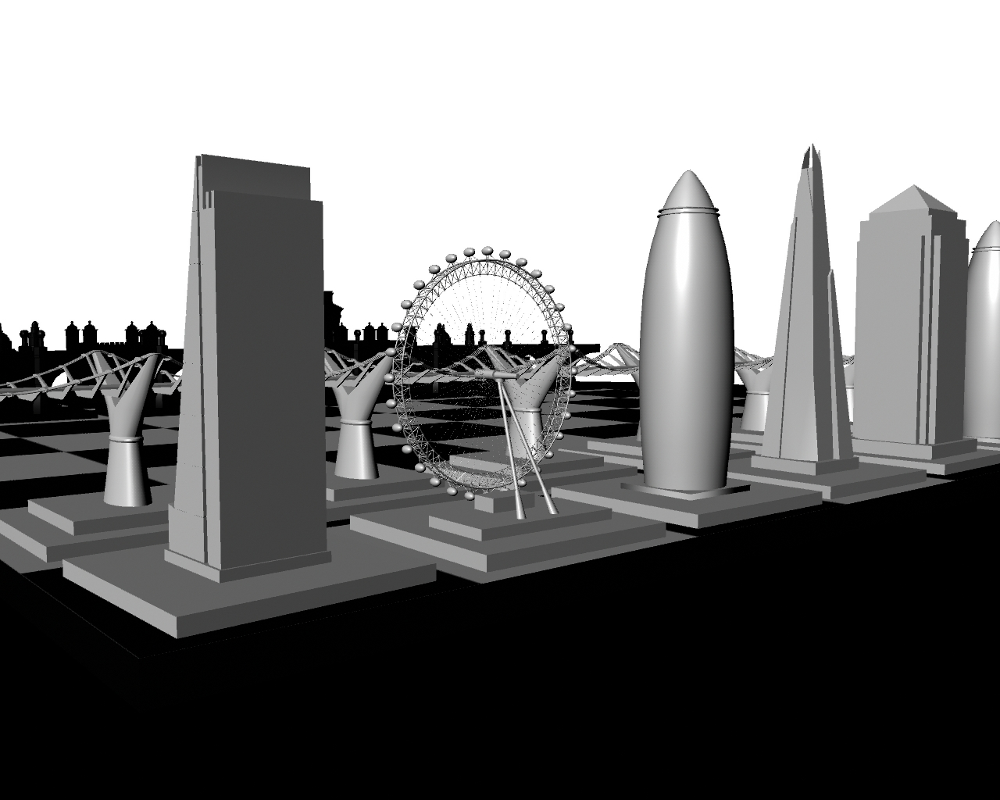

London Chess
The goal of this three-week assignment was to create a unique chess set. I chose to use famous buildings from around London; new buildings for the white pieces and old buildings for the black pieces. Created in Maya.
Render
    


